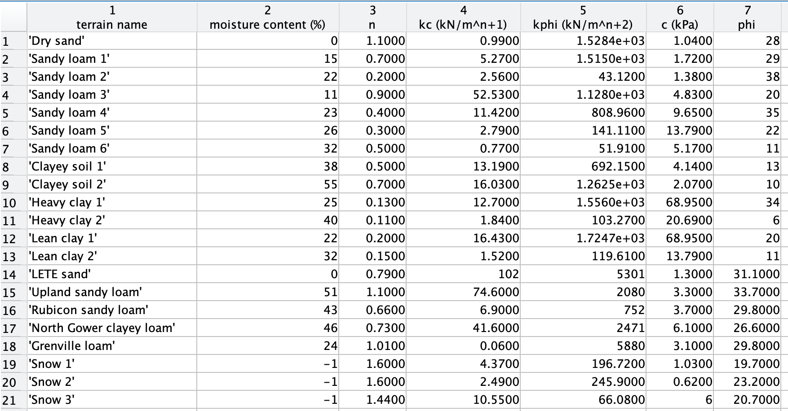
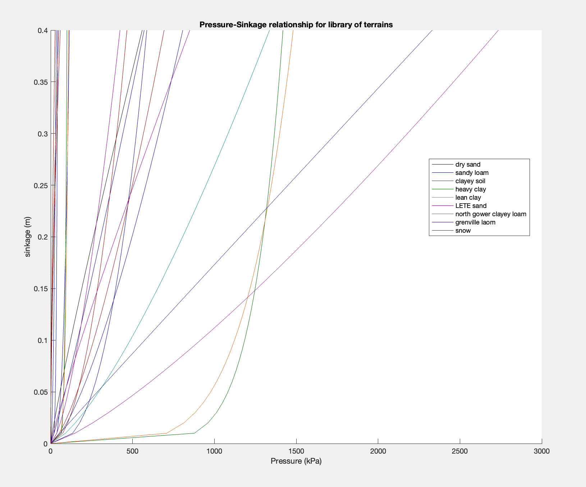
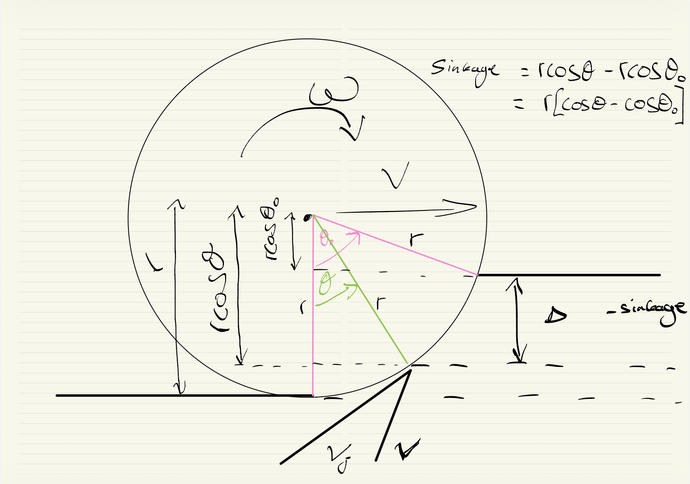
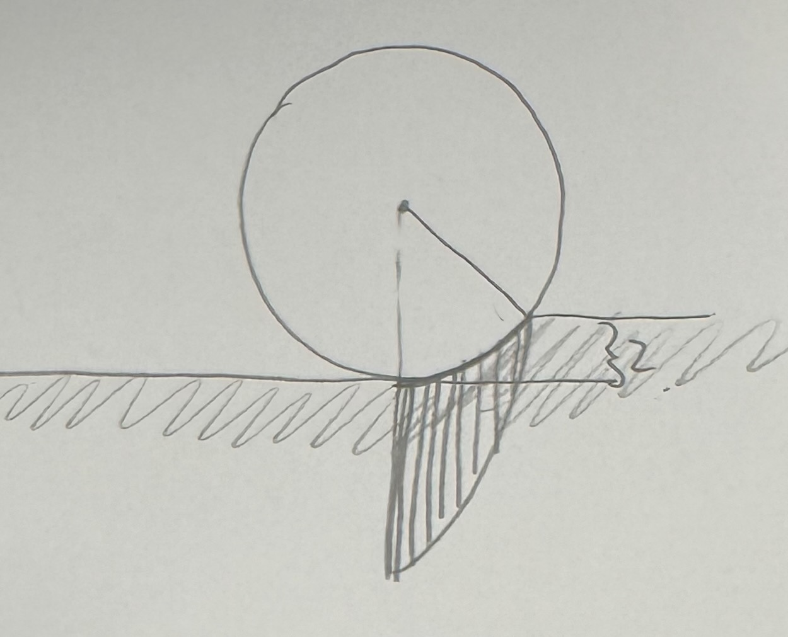
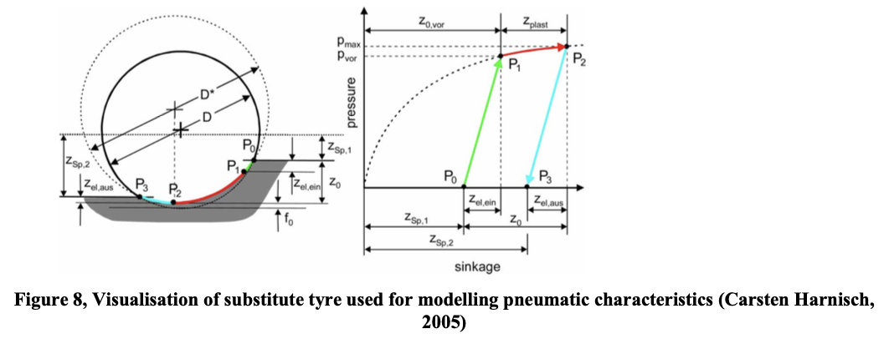
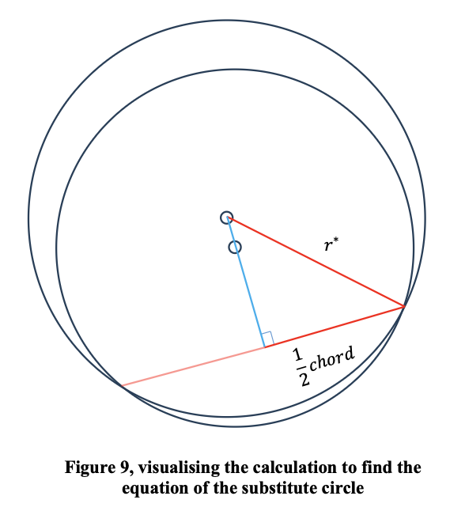

Choosing the project
Based on these factors I chose a project titled terramechanics tyre model. The project description stated that tyre models are an important element of ride/handling simulation, and this mention of vehicle handling caught my attention from my experience on driving simulators and interest in motorsport. It then explained the role of tyre models in terms of estimating forces and mentioned some variables, giving insight into some of the calculations that would be done. It then introduced the problem: that most models deal with tyre behaviour on flat rigid roads, and these models fail to provide accurate predictions for off road vehicles that operate on uneven and deformable roads. And although the context of my knowledge of vehicle handling and tyre grip/forces being for on road conditions, I was intrigued by this description and thought exploring the off road challenges could be interesting. And although my knowledge of vehicle handling and tyre performance was in the context of on-road conditions, Based on the description of this problem, I made the connection of racing and off-road terrain to rally, and the connection of agriculture vehicles from living on an arable farm. The project description then introduced some relevant off-road terrain phenomena, explaining that the aim of the project was to understand these phenomena and incorporate them into a simple terramechanics simulation tyre model. So this project had the underlying topic of vehicle handling, which I had experience of through racing simulators, and because of that could picture the scenario/problem being described as well as the effects of these forces/ result of the work - making connections to things I was interested in. And I thought I would enjoy and find fulfilling the process of creating a (simple) model and testing it on different terrains - I thought I could take it in a direction I wanted to, and also produce visualisations of the differences.
The problem I wanted to solve
This interaction is difficult to model because unlike on a road surface, where the road doesn’t deform under load from a tyre, an off road surface does. Understanding the relationship between tyres and the surface is incredibly important, as they are the only point of contact the vehicle has with the surface. This is why tyre modelling brings together lots of phenomena to try to understand this interaction, and why vehicle models that integrate a tyre model into suspension and mass modelling are made. But as introduced in the project description, most of the focus in this area is with on-road conditions, and the fact that off-road terrains deform is a substantial difference, making the on-road models inaccurate. The project description stated an aim to understand these phenomena and incorporate them in a simple terramechanics simulation tyre model, appropriate for use in off-road vehicle simulations. But from discussing this project with my supervisor, we curated this aim to investigate tyre and terrain relationships and how they affect performance factors of an off-road vehicle. Having mentioned and discussed my two connections, we also thought an aim could be to investigate desired performance factors of certain industries, developing an understanding of unique requirements and challenges.
Understanding Tyre Terrain Interaction
For the first aim of investigating force terrain, Bekker's equation was introduced. This was for pressure-sinkage and shear-stress. Terrain data: In my literature review I had compared different types of modelling, and had chosen semi-empirical for my model. Due to this, experimental data was needed in addition to using set ranges of input values. The experimental data was [indexed] in relation to each terrain, and the set range was sinkage (or slip etc). So a library of terrain data which held these factors for a range of off road terrains was collected, and implemented into MATLAB for use within equations. Pressure-sinkage plot: To investigate the force terrain relationship for the terrains to be used, a plot of pressure-sinkage was made by using Bekker's equation over a range of sinkages for all of the terrains.


Building the first model
So Pressure can be calculated at individual sinkages, and so if a Tyre is pictured at a sinkage in a terrain. There will be the maximum sinkage at the bottom of the Tyre, and lower points of sinkage following the surface of the Tyre, until the point of the top of the terrain where there is no sinkage. So there is an angle range between the bottom of the Tyre and the entry point. This means that pressure can be modeled as a function of theta. Shear stress can also be modeled as a function of theta. This means that you can set a radius for the tyre, and set a maximum sinkage. And both pressure and shear stress can be calculated for each point along the angle range over the contact patch of the tyre. This allows for the vertical load and drawbar pull of the Tyre to be calculated by summing the vertical and horizontal components. So a radius of tyre can be chosen, and the vertical and horizontal forces are calculated based on setting a sinkage. To be able to plot data, the model at this stage was very simplistic, having several assumptions. These were assuming no return, maximum pressure at bottom dead centre, no tread, and solid tyre characteristics.


Developing the model
Return: Pressure distribution: The initial model assumed maximum pressure at bottom dead center of the tyre- as maximum sinkage and Bekkers. However images from Wong from experimental results showed maximum pressure in front of the bottom dead center. Tread: Pneumatic characteristics:
Issues within MATLAB
One of the biggest challenges I faced was when wanting to introduce the phenomena of a pneumatic tyre. From the start, my model was based around selecting a value of radius of tyre, which when given a set sinkage it would calculate the entry and exit angles as the values of pressure would become zero at these.
However the way in which you model a pneumatic tyre, is by substituting a larger circle (larger radius), but only over the contact patch (the actual entry and exit angles stay the same). But the calculation of these entry angles come from the initial radius, and so if the larger radius was just straight substituted into the model, it would generate different (incorrect) entry and exit angles. To start with I was stumped, as every part of my model stemmed from the set radius, and that was it. So at this point I knew I needed to still be able to use the initial radius, and not set a new radius at the start of the model - how could I do this?
From looking at the visuals provided of how this equation works to model a pneumatic tyre, I saw that the circle of larger radius was off-centred to the initial circle, and so there were 2 circles that intercepted at two points. This sparked the idea that I could think about this problem graphically, and if I could find a way to reference the second circle in relation to the initial one. The radius of the smaller circle was known, and we could treat its centre as the origin. So we have an equation for the initial circle. The radius of the larger circle was known, and angles of the two interception points were known (entry and exit angles), the x and y coordinates of these could be calculated from trig.
As the entry and exit points were calculated in terms of x and y, and these are points on both circles, a chord length could be calculated (chord shared for both circles). Half of this chord length allows us to calculate the midpoint of the chord. Then calculate the direction of the chord, then can calculate perpendicular direction to the chord.
As we have the radius length, from center point to intercept, and half chord length, using trig we can calculate the other length of the triangle which is the length to the center point. This allows the x and y coordinates of the centre of the substitute circle to be calculated, and the equation of the substitute circle can be made in relation to the origin (centre of initial circle).
This meant that the distance from the origin (centre of initial circle) to the circumference on the substitute circle could be calculated over the contact patch, all while only allowing the initial radius to be used from the start of the model (ensuring the angles were correct).


From tyre model to vehicle model
I had started with investing force terrain interaction, and then used that to develop a simple Tyre model, iterating that into a more complex model. However the Tyre doesn't behave independently, but rather as part of a system involving the car's mass and suspension. The Tyre model at this current point relied on inputting certain values such as slip, and so I had just been using a standard value. But transitioning this Tyre model into a Simulink ¼ car model meant that a starting position could be defined, and interactions of this complex system could be modeled as it moved through the terrain, with all the data/forces linking together in a feedback loop.
This meant that the model could fundamentally change from setting an input value and getting an output value, into creating a scenario and modelling behavior. A change from individual plots of pressure distributions at certain sinkages to visualizing a systems response to an input, reaching equilibrium, and velocity changes. This was the change from understanding complex phenomena and implementing that to create an accurate Tyre model, to creating a test environment to test out responses in different terrains.
Testing the 1/4 car model
What the model taught me
Tyre modelling phenomena: Bekker's Pressure (and limitations / adaptations) Return, MATLAB: General coding (indexing, loops, clean layout and commenting, anonymous functions (automatically computes value based on current theta in scope)), Plotting (colours, hold, polar plots) Element-wise operations (potentially a big challenge) Decimal point precision, linspace, interpolation, degrees/radians, arrayvalued,
Where I would take it next
What I took from the project
View Full Report
Read about my other project
FPV Aircraft Design, Build and Flight
What started as just enjoyment of indoor RC helicopters transformed into a large scale engineering project, spanning foam board aircraft and multiple iterations of FPV drones.